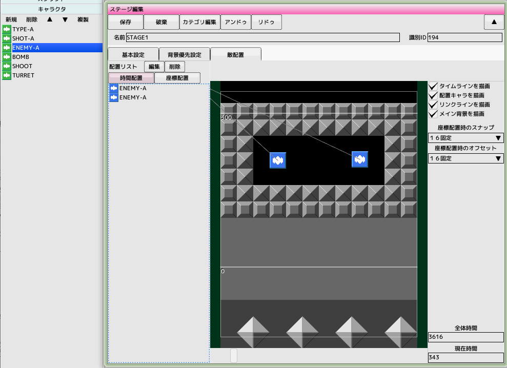
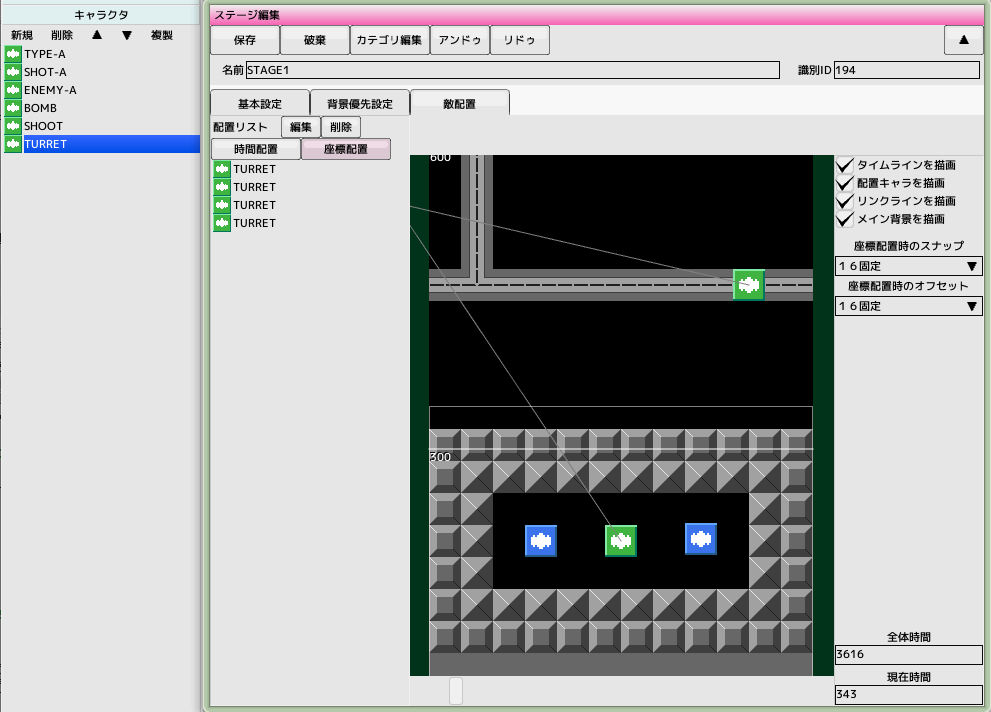
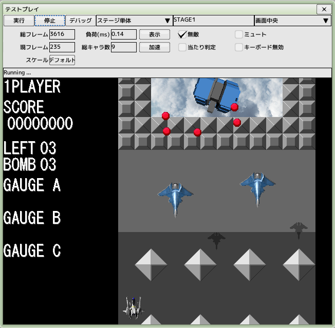

■元のページへ戻る
■元のページへ戻る
10.ステージ配置
前回のチュートリアルで作成したプロジェクトファイルを開いておいてください
ステージに配置できるパーツはキャラクタと編隊の2種類になります
時間配置と座標配置の2つの方式があり、用途に応じて使い分けてください
背景に合わせて敵を出現させたい時は座標配置を使うといいでしょう
時間配置

以前に作成した'STAGE1'を開き、敵配置タブを選択します
全体時間を3616(フレーム数)にします
画面下のスライダーで現在時間を変更できます
配置リストにある時間配置ボタンを有効にします
プロジェクトのキャラクタリストにある'ENEMY-A'をドラッグしてステージ内でドロップします
ドロップした場所にアイコンが配置され、配置リストに'ENEMY-A'が出現します
アイコンを範囲選択してから削除ボタンをクリックすることで配置済みキャラクタを削除できます
配置済みのアイコンは範囲選択してドラッグ移動することができます
座標配置

配置リストにある座標配置ボタンを有効にします
プロジェクトのキャラクタリストにある'TURRET'をドラッグしてステージ内でドロップします
ドロップした場所にアイコンが配置され、配置リストに'TURRET'が出現します
右ドラッグでスクロール、ホイールで拡大縮小を旨く使って多数配置してみてください
テストプレイ

ステージ単体テストを実行します
■ページ上部へ戻る